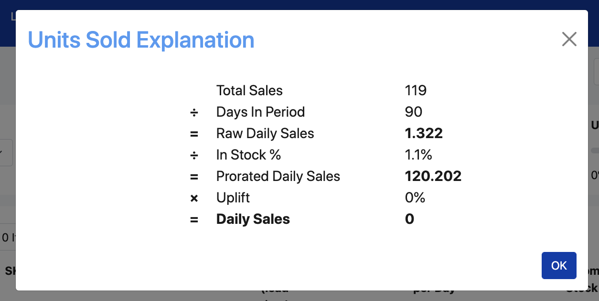
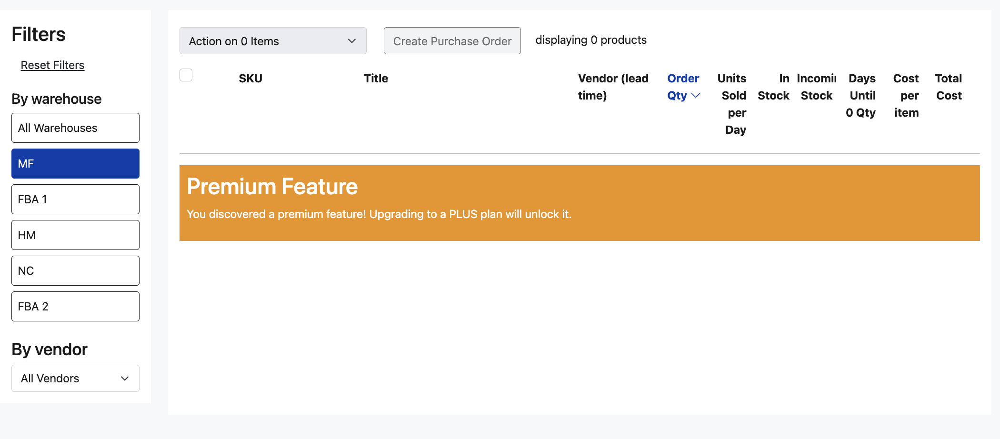

The Listing Mirror Inventory Forecasting tool allows you to easily and accurately calculate how much inventory to reorder so you can rest assured to never miss a sale while avoiding pricey storage fees. Using an algorithm based on your real sales data, you can feel confident in our numbers.
Use our suggested quantity to create purchase orders with virtually no manual entry.
It is located in the Inventory header in the navigation.
We calculate your recommended order quantity via a transparent equation.
((Daily Sales * Stock Coverage) - In Stock Qty - Incoming Qty) = Order Qty
Now, let's break down what each of those items means.
Daily Sales is your units sold per day. We calculate this as your Total Sales divided by the days you have selected in 'for enough stock to cover'. However, that does not take into account the days where you had no stock. What we really want to find is the number of sales you could have made had you been adequately stocked. To compute that, we divide by the percentage of days that you had stock. Note: Any in stock % less than 20% will be rounded up to 20% to more accurately predict order qty. Finally, any uplift you have predicted is factored into the final result.

Clicking the units sold per day number will open a modal explaining how the number was calculated.
Stock coverage is the number of days you select in the 'for enough stock to cover' field.
In Stock Qty is the amount of already purchased stock you have sitting in a warehouse.
Incoming Qty is the amount of already purchase stock you have in route to a warehouse.
In order to give you the Order Qty that will best suit your needs, we ask three (3) things.
1. What range of previous sales data would you like to use? Select any of our range options and we will take all sales during that time into account when calculating your recommended order quantity. You may wish to increase or decrease this selection based on how long you've been selling on a new channel if that channel's sales have affected your stock.
2. How long do you want to stock out before having to reorder? Ordering too much stock can result in storage fees. Too little stock and you have to pay higher shipping fees for two separate orders. Finding that sweet spot really helps your profitability. We recommend stocking out as long as your warehouses allows without charging fees.
3. Has your store experienced any trend in sales? If you're looking to order a seasonal item that you know is going to experience a substantial uptick in sales, move that uplift slider to the right. If you are expecting a downward trend in sales overall due to vacation mode, move that slider to the left.
Helpful tip: If you expect your sales to double, make your uplift 100%.
By warehouse. All Warehouses is the only option we currently offer. This provides the most accurate order quantity amount as it considers all of your sales and all of your inventory. We will work on discovering better methods to send proper inventory amounts to different warehouses, but for inventory restocking purposes this method of All Warehouses will get the most precise number to your vendors via a purchase order.
By vendor. If you would like to only see items in a certain vendor's catalog, use this dropdown to select that vendor. This will decrease the results shown in the list to only items offered by that vendor. Read more about vendor catalogs here
By item type. Do you wish to omit component SKUs, or only view component SKUs? Simply toggle the two options on or off to see the results you want.
See as many, or as few columns, as you'd like. Narrow down the forecast to only data that you wish to see. Click 'Customize View' in the top right corner and select the information that is important to you. Our column options are:
Preview. Provides an image of your product.
SKU. Provides the SKU of the product that is a link to its product page.
Title. Provides the product title of the product.
SKU / Title. If you wish to take up less room on the forecast with the SKU and Title information (one column as opposed to two columns), you can use this option and turn off the individual SKU and Title columns.
Connected Listings. This will show how many listings include this SKU. If it is not a component SKU then this column will show 0. Clicking on that number will take you to a page with all of the listings that include that SKU in their kit/bundle.
Vendor. Provides the cheapest vendor for which that product is offered. As determined by your vendor catalog
Order Qty. This is computed using the following equation: ((Daily Sales * Stock Coverage) - In Stock Qty - Incoming Qty). It cannot be removed as a column from the forecast. You can override our suggestion by clicking the qty and then entering in a new amount.
Total Sales. Provides the overall number of quantity sold for that product in the time period chosen for the 'Based on previous sales of' setting.
Units Sold per Day. We calculate this as your Total Sales divided by the days you have selected in 'for enough stock to cover'. However, that does not take into account the days where you had no stock. What we really want to find is the number of sales you could have made had you been adequately stocked. To compute that, we divide by the percentage of days that you had stock. Finally, any uplift you have predicted is factored into the final result.
In Stock. The quantity you currently have in stock for the warehouse(s) selected.
Incoming Stock. The quantity you have in transit. We determine this amount from the purchase orders that you have issued, but have not yet received.
Days until 0 Qty. This is (In Stock Qty / Units Sold per Day).
Cost per Item. We pull in the cost either from the Product Catalog, or from the Vendor Catalog if you have the item attached to a Vendor. You can update the cost here by clicking on it and entering in a new cost. That cost will then be updated in all applicable areas of the site- either Product Catalog or Vendor Catalog.
Total Cost. This is the (Cost per Item * Order Qty).
Sorting. You can sort based on any column header you wish, both in an ascending and descending order. Simply click the column header once to sort by it. Click it again to toggle between ascending and descending order.
Updating the Order Qty. While we will fill in the Order Qty column with our calculated amount, you can override this simply by entering a new number in the field. That number will then be used on any purchase orders created.
Action Items. You can perform actions on specific items by selecting the checkboxes to the left of the row. You can reset quantities back to our recommended amounts, set quantities to a specific amount in bulk, or assign vendors to an item in bulk.
You can assign a SKU from the forecasting table directly to a Vendor. You can do this in two ways:
1. Click the edit icon in the Vendor column on the table. Here you can set a MPN or cost. By default we will assign SKU to MPN and set the cost as $0.00 unless there is a cost on the product.
2. In bulk by selecting items and then clicking Action > Assign to Vendor. Here you will not be able to edit MPN or cost immediately, and instead they will default to SKU as MPN and cost as $0.00 unless there is a cost on the product. You can always edit them later in your vendor catalog
When you're ready to order more stock, simply select the items from the forecast that you wish to order and click "Create Purchase Order".
Why can't I view the forecast?
If you are seeing a message like the one shown below, you will need to upgrade your plan in order to gain access. Learn more about managing your subscription here

I am new to Listing Mirror. Will forecasting work for me?
Listing Mirror will start calculating order quantities as soon as you begin your trial, but it will be using limited sales knowledge since we've only just begun importing your orders. As you stay and grow with our platform, the calculations will be able to use more data.
Why are some of my SKUs not showing in the forecast?
This could be for one of two reasons.
1. We cap the forecast at 10k SKUs. You can opt to view either your highest selling products or most recently added products. This keeps us from the page timing out for very large catalogs.
2. The SKU is a kit or bundle. We will not show kits or bundles, but instead will show their components. When restocking a kit or bundle, you will need to order their individual component SKUs that make up the recipe. You may need to buy more of one component than another based on what other recipes the SKUs are included.
Why are my vendors not staying assigned to the SKU after I've selected them in the vendor dropdown?
We do not add a SKU to a vendor catalog until it has been created with a Purchase Order. This is because we need MPN and cost information for that product before we add it to a vendor's catalog.